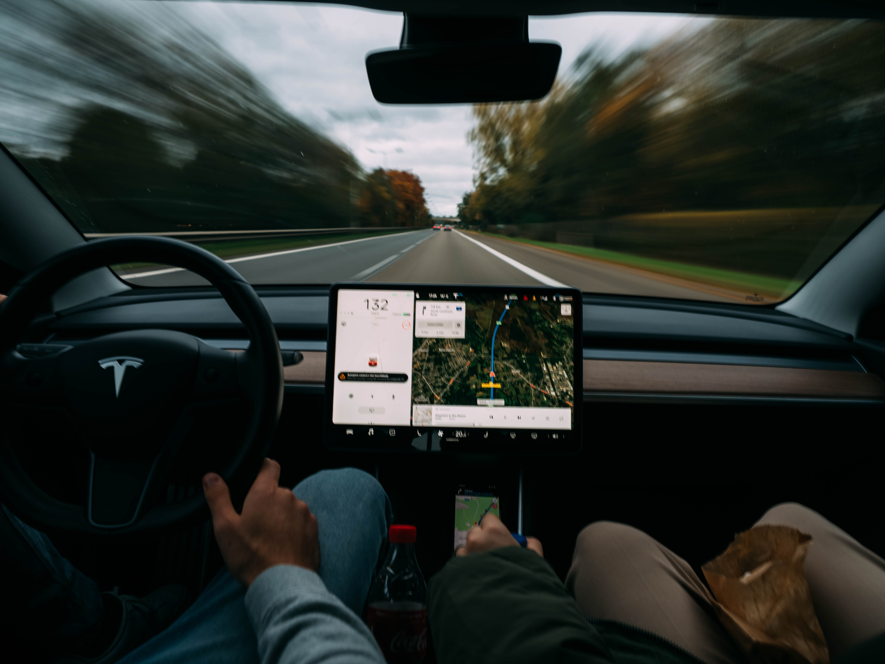

Overview
Purpose
Our website's purpose is to increase the notability of our newest soccer club by displaying all its amazing facilities online such as its fields, barbecue section, and its room in which all of our customers can watch games together. SoccerMax is the right place for you, your friends, your and family.
Audience
From young to elders, SoccerMax comes as a website to motivate its customers of all ages to unite together to play, watch, and have some fun with their families in our new soccer club. SoccerMax will be available for Desktop, Android, and IOS.
Branding
Website Logo
Style Guide
Color Palette
Palette URL: https://coolors.co/396e94-e7c24f-a43312-381d2a-aabd8c| Primary | Secondary | Accent 1 | Accent 2 |
|---|---|---|---|
| [#000000] | [#004B23] | [#C47C13] | [#FFFF] |
Typography
Heading Font: [Reem Kufi Fun]
Paragraph Font: [PT Serif]
Normal paragraph example
The newest and warmest soccer club in Idaho, Utah. The Club is an innovation for soccer lovers, bringing diverse activities for its customers. Since 2021, SoccerMax Club is dedicated to provide incredible experiences.
Colored paragraph example
Clubs might be very equaly the same for some, no matter what kind of experiences with clubs you may have before SoccerMax Club comes to break all the patterns seen before, providing an unforgetable experience for its customers.
Navigation
Site Map
Content
Home page
The homepage is designed for the users to feel more interested to know about the club through its website. Displaying the whole area of the club at first might cause the viewers to be interested in knowing more about it. At the beginning of the homepage, there is black main navigation with an opacity of 80%, so it displays the background of the page which contains a hero image with a picture of the club from above. The navigation is simple and interactive, making it easier for the users can have a soft experience navigating on the website, the logo is located at the top left and it is also interactive when hovered by the user. Below the navigation bar, there is another bar fading from green to black that goes from left to right, the intention is to cause a good first impression on the users, at the end of the picture of the club there is another bar that the user can interact and know more about the website. The middle part of the home page has a section with pictures displaying the club’s facilities such as its fields, barbecue room, and outdoor TV. The user can interact with the pictures to receive more information about the club’s facilities. At the bottom of the home webpage, there is an image with some effects, the purpose is to motivate the user to click on the button to visit the visit us page. The final part of the homepage has a bar containing our social media.
Images for the Home page


[Visit Us]
This page is destined to show the customers the club's location, better ways to arrive at it, parking places, and promotion offers. The navigation bar and the bottom bar are the same as from the homepage, the remaining content of this webpage is made to provide the users with information about the club’s location and ways to arrive, the content is divided into sections inside squares beside a picture related with the content of the location. The first square contains a text describing the club’s coordinates and the best ways to arrive at it, the second has a couple of more information motivating the user to visit the club and about where the parking places nearer the club are located, the third and final square has promotion tickets that will only be provided on the website, thus motivating our customers to visit our webpage and feel even more interested in visiting our club in person since they will show the ticket to receive a discount in the club. As stated before, this page of the website is centered on helping our users to be informed and motivated to visit our club in person to enjoy all the amazing activities our soccer club has.
Images for the Page 2

[FAQ]
Though this webpage will not store information from our users, this part of the website is designed to answer all our customers' questions by answering possible questions they may have. The main navigation and the bottom bar of this page are also the same as the home page. Displaying related images to the club in the background is a way to make our users immerse in the website experience. The answers to the frequently asked questions are in a box, being hidden in a box the frequently asked answers are more interactive, and the users can click on it to receive answers to their questions. This section’s intention is to cause curiosity in our users, prompting them to interact even more with the webpage by looking for their questions, and clicking on the frequently asked question boxes which will help them to feel more comfortable with visiting the club, since they will be informed with everything about the club, such as its rules, facilities, and opening hours. The content inside the boxes is intended to be very explicit, focusing on answering all the users’ questions in a way that will motivate them to visit us and feel satisfied with the information provided.
Images for the Page 3
Wireframes
Create three wireframes for your site. One for each page and list them here
Home
[Any additional details about home that the wireframe does not make clear]
[Visit Us]
[Any additional details about home that the wireframe does not make clear ]
[FAQ]
[Any additional details about home that the wireframe does not make clear]